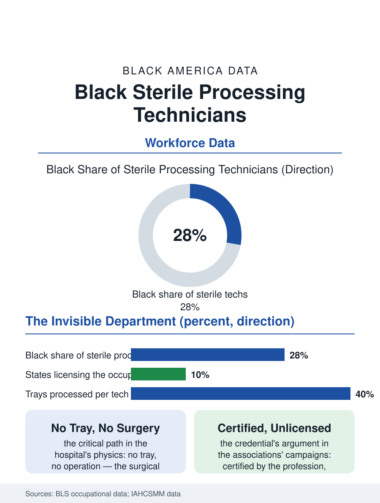

Black Employment
The First Link: Black Sterile Processing Technicians
The basement where every operation begins, staffed at the floor, certified by the profession and unlicensed by the law. The sterile processing file.

Sterile processing is the hospital's invisible department: the technicians who decontaminate, assemble, and sterilize the surgical instruments on which every operation depends, working in the basement's steam and chemistry, in an occupation with no license in most states, a workforce substantially Black and immigrant, and a failure mode that closes operating rooms. This article reads the sterile processing file.
The Basement's Critical Path
The department's position in the hospital's physics is absolute: no sterile tray, no operation, so that the processing department's throughput is the surgical schedule's true constraint, a critical path staffed by the hospital's least visible and among its least paid technicians, whose work, the disassembly and the decontamination, the inspection under the lighted magnifier, the tray assembled to the surgeon's preference card, the sterilizer's cycle and the biological indicator's verdict, is a manufacturing discipline practiced inside a hospital that rarely counts it among its clinical glories. The workforce's composition in the hospital surveys reflects the department's position in the building's hierarchy, its Black and immigrant shares among the facility's highest, its wage at the support band's floor, its injury file, the chemical exposures, the sharps of the returned trays, the heat and the lifting, recorded in the compensation data of a department the safety office visits least. The night shift is the department's true size in the hospital's accounting, the day's trays returning with the evening's cases and the morning's first starts demanding the sterile store complete before the surgeons arrive, so that the department's real census is taken at 3 a.m., when its smallest crew holds the whole next day's surgery in its hands, in the pattern of the night file's citizenship that runs through this entire section. The loaner tray economy, the vendor's instruments arriving for the scheduled case and departing after it, has made the department the hospital's receiving dock for a logistics empire whose timing failures cancel operations in the open, a supply chain whose last hundred feet are the technician's cart and whose reliability is her department's unmeasured product.
Certification Without a License
The credential file is the occupation's argument: the national certification exists and the better systems require it, but most states license nothing, so that the department's expertise is certified by the profession and unrecognized by the law, a status the workforce's associations have campaigned to change state by state with the patient safety file as their brief, the instrument's bioburden and the tray's missing clamp being events whose investigation traces to the department's training and staffing as surely as to the field's vigilance in the surgical technologist's file, the two workforces being the sterile chain's two ends. The technology file is repricing the department's skill upward in the current era, the instrument tracking systems and the robotic surgery's intricate devices multiplying the assembly's complexity and the error's cost, so that the department's veteran, who reads a tray the way the pharmacist reads an order, is becoming the scarce specialist the wage has not yet admitted.
The Chain's First Link
The sterile processing file closes on the chain's integrity as the file's whole argument: every surgical outcome in this atlas's health section begins in this basement, in hands the system pays and sees the least, and the department's failures surface in the operating room as mysteries whose solutions live downstairs, a geography of credit and blame the hospital's own incident reviews keep rediscovering. The occupation's ladder runs to the department's management and the vendor's education and sales of the instrument economy, its veterans recruited for the knowledge the new technology keeps making dearer. The hospitals count the technicians in the tens of thousands nationally. The file's last entry is the sterilizer's door at the cycle's end, the indicator read and the tray released to the morning's first case, in the room where the Black technician's shift has already decided whether the day's surgery happens at all, a decision the schedule upstairs records as its own, in the pattern this atlas was written to notice. The department's veterans read the morning's case schedule the way the newsroom reads the wire, knowing by the trays requested how the day will go. It is the work the whole building quietly assumes, and the file's purpose is to stop assuming it silently.
More in Black Employment
The Black Unemployment Rate: The Two-to-One Pattern
Black unemployment runs at roughly twice the White rate — 5.5 percent against 3.3 percent in annual averages — a ratio stable across five decades of federal data. How it is measured and why it persists.
Black Median Weekly Earnings: The 80-Cent Ratio
Black full-time workers earn a median of about $900 a week — roughly 80 cents for every dollar White workers earn. The BLS earnings data by group, gender, and occupation.
Black Labor Force Participation: Working at National Rates
Black labor force participation runs at roughly the national rate — and Black women participate at higher rates than White women. The BLS participation data.
Source: Bureau of Labor Statistics occupational employment data; Healthcare Sterile Processing Association workforce data.